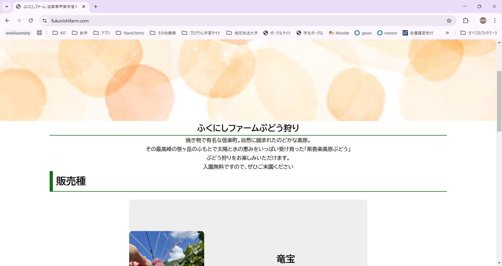

- home
- ふくにしファーム
ふくにしファームWebサイト
システム画面

概要
祖父が行っているぶどう園の宣伝用に作成したWebサイトです。
こちらは実際にデプロイされていますので下部記載の制作物の箇所にリンクがありますのでぜひ閲覧ください。
html及びcssを学びながら作成しており、ハンバーガーメニューの実装やスライドカルーセルの実装などをcssで行っています。
今後の展望として、ブログページを作成し年間を通してどのようにぶどうが栽培されるのかをwebサイトを閲覧してくださっている方に知ってもらおうと考えています。
使用技術・ライブラリ
html・css
ロリポップ
FFFTP